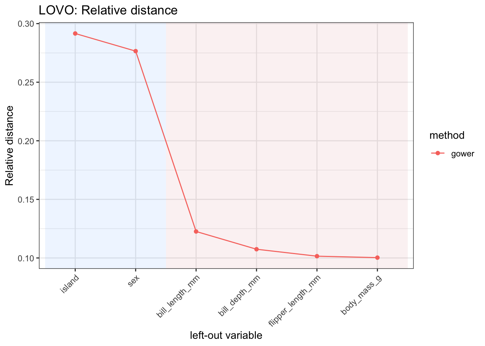
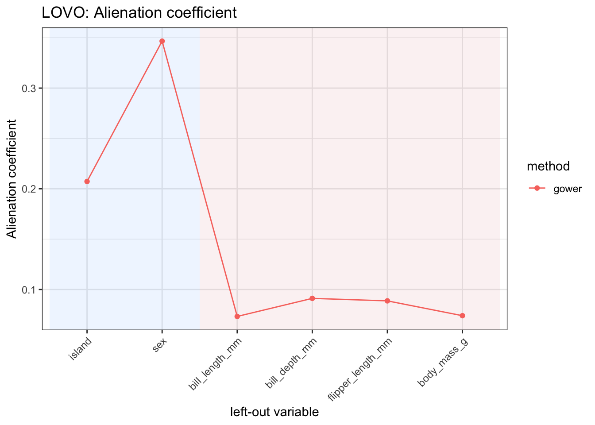
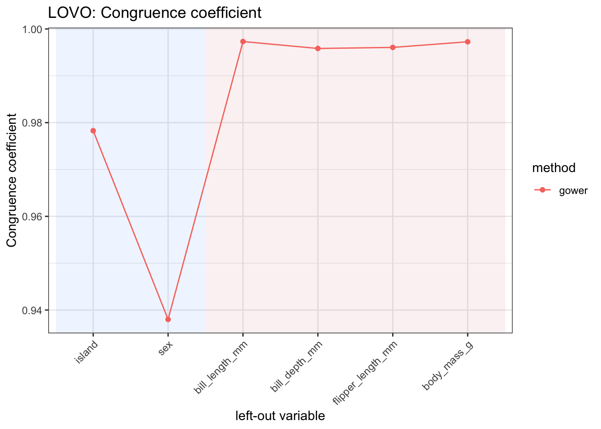
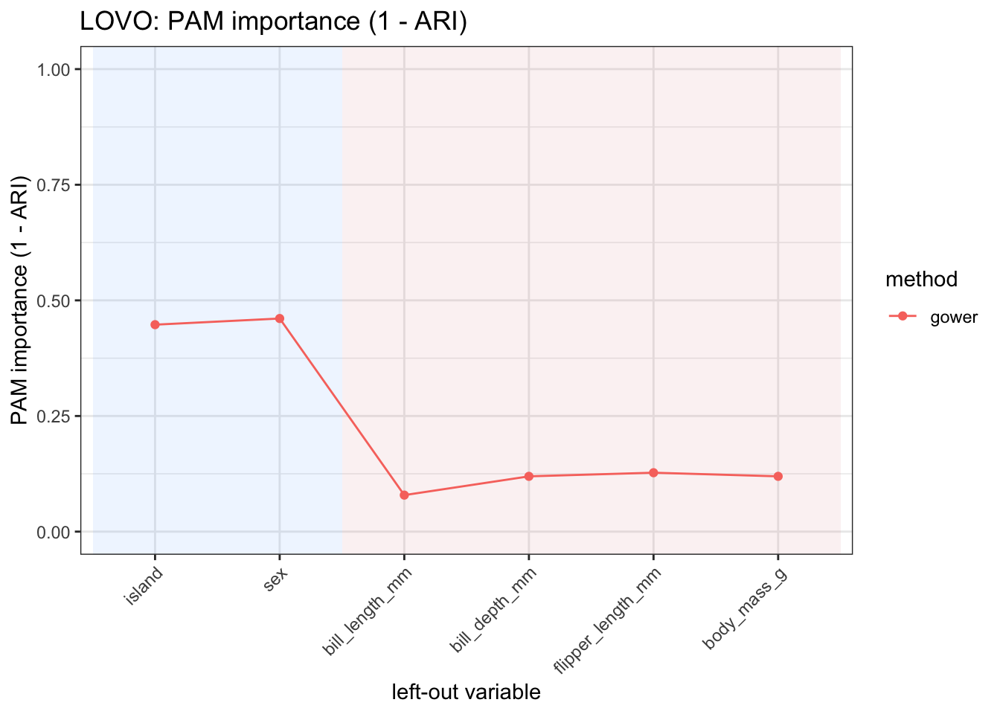
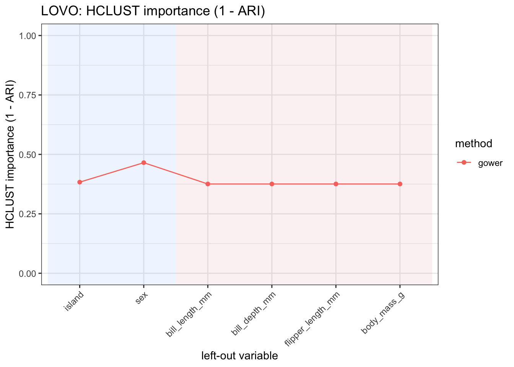
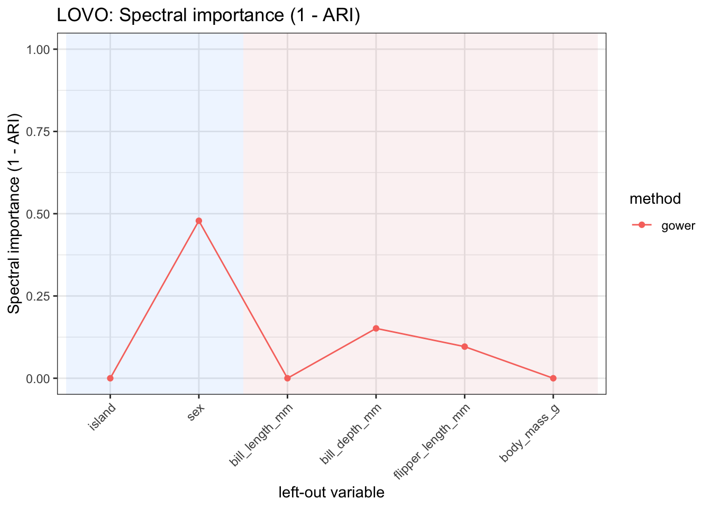
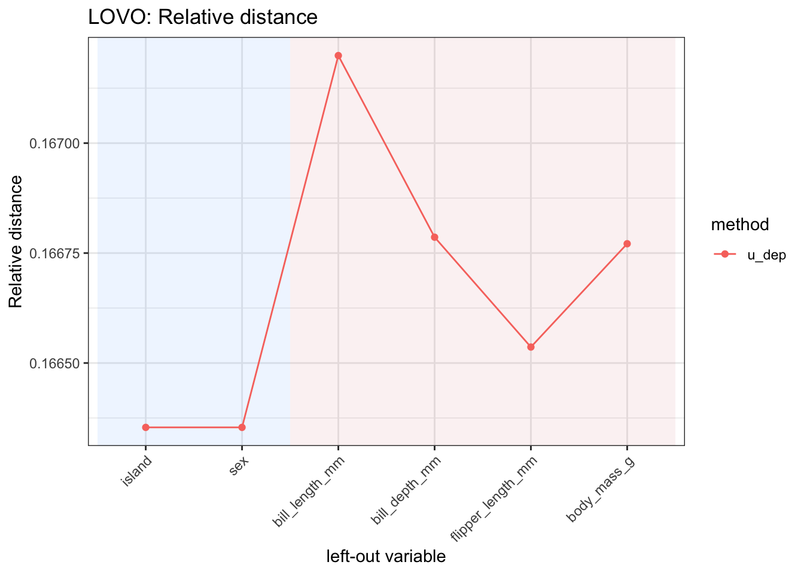
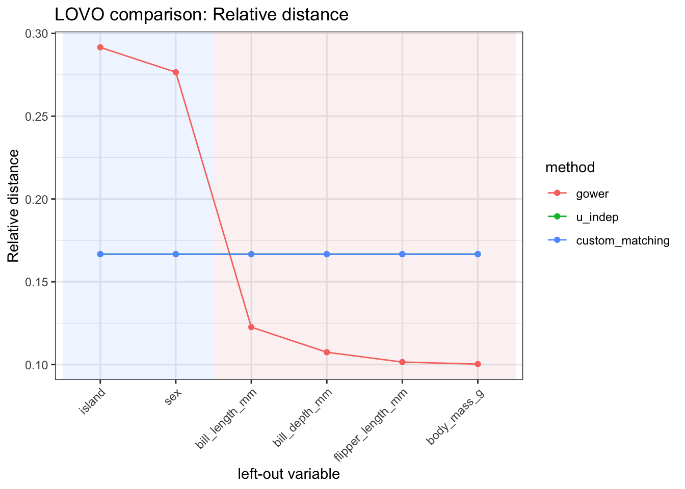
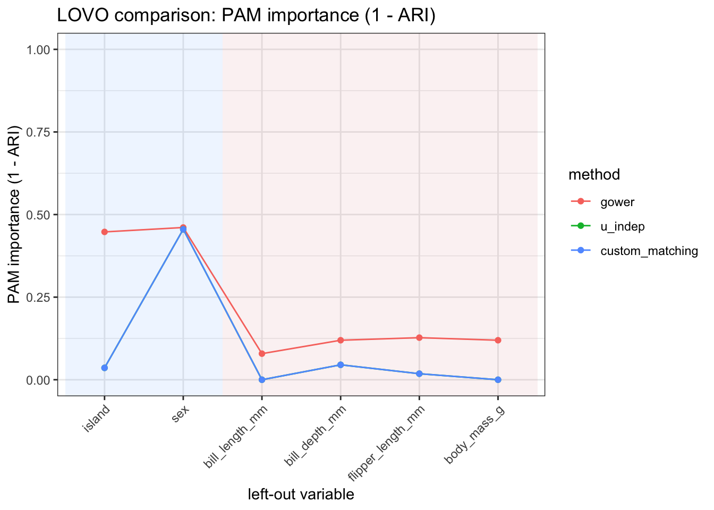

Assessing variable contributions to distances
1 Setup
We use the palmerpenguins data for illustration.
2 Leave-one-variable-out diagnostics
lovo_mdist() computes leave-one-variable-out diagnostics for assessing variable contributions to a distance construction.
The function first computes the full dissimilarity matrix using all predictors. Then, one predictor at a time, it removes a variable, recomputes the dissimilarity matrix, and compares the reduced dissimilarity with the full one.
Variables whose removal strongly changes the dissimilarity matrix, the induced configuration, or the resulting clustering structure can be interpreted as having a larger contribution to the distance construction.
lovo_gower <- lovo_mdist(
penguins_small,
response = species,
response_used = FALSE,
preset = "gower"
)
lovo_gowerMDistLOVO object
preset : gower
dims : 2
n_obs : 333
response used : FALSE
top vars:
# A tibble: 5 × 4
variable variable_type relative_distance mad_importance
<chr> <chr> <dbl> <dbl>
1 island categorical 0.292 0.0853
2 sex categorical 0.277 0.0809
3 bill_length_mm numeric 0.123 0.0359
4 bill_depth_mm numeric 0.107 0.0314
5 flipper_length_mm numeric 0.102 0.0297The result can be summarized as follows.
summary(lovo_gower)Summary of MDistLOVO
preset : gower
dims : 2
n_obs : 333
response used : FALSE
Relative distance:
range [0.1003, 0.2916], mean 0.1667
Top by relative distance:
# A tibble: 5 × 3
variable variable_type relative_distance
<chr> <chr> <dbl>
1 island categorical 0.292
2 sex categorical 0.277
3 bill_length_mm numeric 0.123
4 bill_depth_mm numeric 0.107
5 flipper_length_mm numeric 0.102The main results are stored in the $results field.
lovo_gower$results |>
kableExtra::kbl(format = "html", digits = 3) |>
kableExtra::kable_styling(full_width = FALSE)| variable | variable_type | mad_importance | cc_importance | mds_congruence | ac_importance | mad_normalized | relative_distance |
|---|---|---|---|---|---|---|---|
| island | categorical | 0.085 | 0.978 | 0.978 | 0.207 | 0.292 | 0.292 |
| bill_length_mm | numeric | 0.036 | 0.997 | 0.997 | 0.073 | 0.123 | 0.123 |
| bill_depth_mm | numeric | 0.031 | 0.996 | 0.996 | 0.091 | 0.107 | 0.107 |
| flipper_length_mm | numeric | 0.030 | 0.996 | 0.996 | 0.089 | 0.102 | 0.102 |
| body_mass_g | numeric | 0.029 | 0.997 | 0.997 | 0.074 | 0.100 | 0.100 |
| sex | categorical | 0.081 | 0.938 | 0.938 | 0.347 | 0.277 | 0.277 |
3 Interpreting the output
The output of lovo_mdist() contains several diagnostics, each capturing a different aspect of the change induced by removing a variable.
The main diagnostics can be interpreted as follows.
| metric | interpretation | contribution_direction |
|---|---|---|
| mad_importance | Mean absolute difference between the full dissimilarity matrix and the leave-one-variable-out dissimilarity matrix. | Larger values indicate a larger contribution. |
| relative_distance | Normalized version of `mad_importance`; it reports the relative contribution of each variable. | Larger values indicate a larger contribution. |
| mds_congruence | Congruence between the MDS configuration obtained from the full distance and the one obtained after removing the variable. | Smaller values indicate a larger contribution. |
| cc_importance | Congruence coefficient between the full and reduced configurations. | Smaller values indicate a larger contribution. |
| ac_importance | Alienation coefficient between the full and reduced configurations. | Larger values indicate a larger contribution. |
The metrics are complementary. A variable may have a large effect on the pairwise dissimilarities without substantially changing the geometric configuration. Conversely, a variable may have a modest effect on the average distances but still affect the configuration induced by the distance matrix.
4 Visualising variable contributions
The relative contribution of each variable can be visualized with autoplot().
lovo_gower$autoplot(
metric = "relative_distance",
reorder = TRUE
)
Other metrics can be visualized by changing the metric argument. For example, ac_importance displays the alienation coefficient.
lovo_gower$autoplot(
metric = "ac_importance",
reorder = TRUE
)
The congruence coefficient can also be displayed. Since this is an agreement measure, smaller values indicate that removing the variable produces a larger change in the induced configuration.
lovo_gower$autoplot(
metric = "cc_importance",
reorder = TRUE
)
5 Clustering-based LOVO diagnostics
lovo_mdist() can also assess how removing each variable affects cluster partitions derived from the distance matrix.
To compute clustering-based diagnostics, the number of clusters must be supplied through cluster_k. The clustering methods are controlled by cluster_methods. Available options are "pam", "hclust", and "spectral".
In the following example, we compute clustering-based diagnostics with three clusters.
lovo_gower_cluster <- lovo_mdist(
penguins_small,
response = species,
response_used = FALSE,
preset = "gower",
cluster_k = 3,
cluster_methods = c("pam", "hclust", "spectral")
)
lovo_gower_clusterMDistLOVO object
preset : gower
dims : 2
n_obs : 333
response used : FALSE
cluster_k : 3
cluster methods : pam, hclust, spectral
hclust linkage : average
clustering diagnostics : PAM HCLUST SPECTRAL
top vars:
# A tibble: 5 × 7
variable variable_type relative_distance mad_importance pam_importance
<chr> <chr> <dbl> <dbl> <dbl>
1 island categorical 0.292 0.0853 0.447
2 sex categorical 0.277 0.0809 0.461
3 bill_length_mm numeric 0.123 0.0359 0.0789
4 bill_depth_mm numeric 0.107 0.0314 0.120
5 flipper_length_… numeric 0.102 0.0297 0.127
# ℹ 2 more variables: hclust_importance <dbl>, spectral_importance <dbl>The corresponding results include ARI-based diagnostics for each clustering method.
lovo_gower_cluster$results |>
dplyr::select(
variable,
variable_type,
ari_pam,
pam_importance,
ari_hclust,
hclust_importance,
ari_spectral,
spectral_importance
) |>
kableExtra::kbl(format = "html", digits = 3) |>
kableExtra::kable_styling(full_width = FALSE)| variable | variable_type | ari_pam | pam_importance | ari_hclust | hclust_importance | ari_spectral | spectral_importance |
|---|---|---|---|---|---|---|---|
| island | categorical | 0.553 | 0.447 | 0.617 | 0.383 | 1.000 | 0.000 |
| bill_length_mm | numeric | 0.921 | 0.079 | 0.624 | 0.376 | 1.000 | 0.000 |
| bill_depth_mm | numeric | 0.880 | 0.120 | 0.624 | 0.376 | 0.848 | 0.152 |
| flipper_length_mm | numeric | 0.873 | 0.127 | 0.624 | 0.376 | 0.904 | 0.096 |
| body_mass_g | numeric | 0.880 | 0.120 | 0.624 | 0.376 | 1.000 | 0.000 |
| sex | categorical | 0.539 | 0.461 | 0.535 | 0.465 | 0.521 | 0.479 |
The ARI columns compare the partition obtained from the full distance matrix with the partition obtained after removing each variable. Since ARI is an agreement measure, smaller values indicate a stronger change in the clustering structure.
The corresponding importance columns are defined as 1 - ARI. Therefore, larger values of pam_importance, hclust_importance, and spectral_importance indicate a larger contribution to the clustering structure induced by the distance.
| metric | interpretation | contribution_direction |
|---|---|---|
| ari_pam | ARI between PAM clusters from the full and reduced distances. | Smaller values indicate a larger contribution. |
| ari_hclust | ARI between hierarchical clusters from the full and reduced distances. | Smaller values indicate a larger contribution. |
| ari_spectral | ARI between spectral clusters from the full and reduced distances. | Smaller values indicate a larger contribution. |
| pam_importance | PAM-based importance, computed as `1 - ari_pam`. | Larger values indicate a larger contribution. |
| hclust_importance | Hierarchical-clustering importance, computed as `1 - ari_hclust`. | Larger values indicate a larger contribution. |
| spectral_importance | Spectral-clustering importance, computed as `1 - ari_spectral`. | Larger values indicate a larger contribution. |
For example, the PAM-based importance can be visualized as follows.
lovo_gower_cluster$autoplot(
metric = "pam_importance",
reorder = TRUE
)
The same diagnostic can be inspected for hierarchical clustering.
lovo_gower_cluster$autoplot(
metric = "hclust_importance",
reorder = TRUE
)
Or for spectral clustering.
lovo_gower_cluster$autoplot(
metric = "spectral_importance",
reorder = TRUE
)
The three cluster-based diagnostics need not rank variables in exactly the same way. A variable may be important for the partition induced by one clustering method and less important for another. This makes clustering-based LOVO diagnostics useful for assessing whether variable contributions are stable across clustering algorithms.
6 Response-aware LOVO diagnostics
When response_used = FALSE, the response column is removed before computing distances. When response_used = TRUE, the response can be used by response-aware distance specifications, but it is still not treated as a predictor in the leave-one-variable-out loop.
lovo_response <- lovo_mdist(
penguins_small,
response = species,
response_used = TRUE,
preset = "u_dep"
)
lovo_responseMDistLOVO object
preset : u_dep
dims : 2
n_obs : 333
response used : TRUE
top vars:
# A tibble: 5 × 4
variable variable_type relative_distance mad_importance
<chr> <chr> <dbl> <dbl>
1 bill_length_mm numeric 0.167 1.01
2 bill_depth_mm numeric 0.167 1.00
3 body_mass_g numeric 0.167 1.00
4 flipper_length_mm numeric 0.167 1.00
5 island categorical 0.166 1.00The response-aware diagnostics can be inspected in the same way.
lovo_response$results |>
kableExtra::kbl(format = "html", digits = 3) |>
kableExtra::kable_styling(full_width = FALSE)| variable | variable_type | mad_importance | cc_importance | mds_congruence | ac_importance | mad_normalized | relative_distance |
|---|---|---|---|---|---|---|---|
| island | categorical | 1.000 | 0.979 | 0.979 | 0.205 | 0.166 | 0.166 |
| bill_length_mm | numeric | 1.005 | 0.995 | 0.995 | 0.100 | 0.167 | 0.167 |
| bill_depth_mm | numeric | 1.003 | 0.979 | 0.979 | 0.203 | 0.167 | 0.167 |
| flipper_length_mm | numeric | 1.001 | 0.998 | 0.998 | 0.058 | 0.167 | 0.167 |
| body_mass_g | numeric | 1.003 | 0.991 | 0.991 | 0.136 | 0.167 | 0.167 |
| sex | categorical | 1.000 | 0.924 | 0.924 | 0.383 | 0.166 | 0.166 |
For example, the relative-distance contribution can be visualized as follows.
lovo_response$autoplot(
metric = "relative_distance",
reorder = TRUE
)
7 Comparing LOVO diagnostics across distance specifications
The function compare_lovo_mdist() compares leave-one-variable-out diagnostics across several distance specifications.
Instead of running lovo_mdist() separately for each specification, the user supplies a named list of methods. Each element of the list contains arguments passed to lovo_mdist(), such as preset, method_cat, method_num, and commensurable.
For each distance specification, compare_lovo_mdist() computes the full distance, recomputes the leave-one-variable-out distances, extracts the diagnostics, and combines the results into a single MDistLOVOCompare object.
lovo_compare <- compare_lovo_mdist(
penguins_small,
response = "species",
response_used = FALSE,
methods = list(
gower = list(preset = "gower"),
u_indep = list(preset = "u_indep"),
custom_matching = list(
preset = "custom",
method_cat = "matching",
method_num = "std",
commensurable = TRUE
)
)
)
lovo_compareMDistLOVOCompare object
methods: gower, u_indep, custom_matching
dims : 2
n_obs : 333
rows : 18
Top variables within each method:
# A tibble: 9 × 5
method variable variable_type relative_distance mad_importance
<fct> <chr> <chr> <dbl> <dbl>
1 gower island categorical 0.292 0.0853
2 gower sex categorical 0.277 0.0809
3 gower bill_length_mm numeric 0.123 0.0359
4 u_indep island categorical 0.167 1.00
5 u_indep bill_length_mm numeric 0.167 1.00
6 u_indep bill_depth_mm numeric 0.167 1.00
7 custom_matching island categorical 0.167 1.00
8 custom_matching bill_length_mm numeric 0.167 1.00
9 custom_matching bill_depth_mm numeric 0.167 1.00 The combined results are stored in the $results field. The table contains one row for each combination of distance specification and left-out variable.
lovo_compare$results |>
dplyr::select(
method,
variable,
variable_type,
relative_distance,
mad_importance,
mds_congruence,
ac_importance
) |>
kableExtra::kbl(format = "html", digits = 3) |>
kableExtra::kable_styling(full_width = FALSE)| method | variable | variable_type | relative_distance | mad_importance | mds_congruence | ac_importance |
|---|---|---|---|---|---|---|
| gower | island | categorical | 0.292 | 0.085 | 0.978 | 0.207 |
| gower | bill_length_mm | numeric | 0.123 | 0.036 | 0.997 | 0.073 |
| gower | bill_depth_mm | numeric | 0.107 | 0.031 | 0.996 | 0.091 |
| gower | flipper_length_mm | numeric | 0.102 | 0.030 | 0.996 | 0.089 |
| gower | body_mass_g | numeric | 0.100 | 0.029 | 0.997 | 0.074 |
| gower | sex | categorical | 0.277 | 0.081 | 0.938 | 0.347 |
| u_indep | island | categorical | 0.167 | 1.000 | 0.992 | 0.123 |
| u_indep | bill_length_mm | numeric | 0.167 | 1.000 | 0.992 | 0.123 |
| u_indep | bill_depth_mm | numeric | 0.167 | 1.000 | 0.993 | 0.120 |
| u_indep | flipper_length_mm | numeric | 0.167 | 1.000 | 0.995 | 0.099 |
| u_indep | body_mass_g | numeric | 0.167 | 1.000 | 0.995 | 0.101 |
| u_indep | sex | categorical | 0.167 | 1.000 | 0.966 | 0.260 |
| custom_matching | island | categorical | 0.167 | 1.000 | 0.992 | 0.123 |
| custom_matching | bill_length_mm | numeric | 0.167 | 1.000 | 0.992 | 0.123 |
| custom_matching | bill_depth_mm | numeric | 0.167 | 1.000 | 0.993 | 0.120 |
| custom_matching | flipper_length_mm | numeric | 0.167 | 1.000 | 0.995 | 0.099 |
| custom_matching | body_mass_g | numeric | 0.167 | 1.000 | 0.995 | 0.101 |
| custom_matching | sex | categorical | 0.167 | 1.000 | 0.966 | 0.260 |
The summary reports the range and average of the main LOVO diagnostics within each distance specification.
summary(lovo_compare)Summary of MDistLOVOCompare
methods: gower, u_indep, custom_matching
dims : 2
n_obs : 333
# A tibble: 3 × 13
method mad_min mad_max mad_mean rel_min rel_max rel_mean mds_min mds_max
<fct> <dbl> <dbl> <dbl> <dbl> <dbl> <dbl> <dbl> <dbl>
1 gower 0.0293 0.0853 0.0488 0.100 0.292 0.167 0.938 0.997
2 u_indep 1.000 1.00 1.00 0.167 0.167 0.167 0.966 0.995
3 custom_matc… 1.000 1.00 1.00 0.167 0.167 0.167 0.966 0.995
# ℹ 4 more variables: mds_mean <dbl>, ac_min <dbl>, ac_max <dbl>, ac_mean <dbl>The comparison object also has an autoplot() method. This makes it possible to compare the contribution profiles induced by different distance specifications.
lovo_compare$autoplot(
metric = "relative_distance",
reorder = TRUE
)
A comparison can also include clustering-based diagnostics by passing cluster_k and, optionally, cluster_methods.
lovo_compare_cluster <- compare_lovo_mdist(
penguins_small,
response = "species",
response_used = FALSE,
cluster_k = 3,
cluster_methods = c("pam", "hclust", "spectral"),
methods = list(
gower = list(preset = "gower"),
u_indep = list(preset = "u_indep"),
custom_matching = list(
preset = "custom",
method_cat = "matching",
method_num = "std",
commensurable = TRUE
)
)
)
lovo_compare_clusterMDistLOVOCompare object
methods: gower, u_indep, custom_matching
dims : 2
n_obs : 333
rows : 18
Top variables within each method:
# A tibble: 9 × 8
method variable variable_type relative_distance mad_importance pam_importance
<fct> <chr> <chr> <dbl> <dbl> <dbl>
1 gower island categorical 0.292 0.0853 0.447
2 gower sex categorical 0.277 0.0809 0.461
3 gower bill_le… numeric 0.123 0.0359 0.0789
4 u_indep island categorical 0.167 1.00 0.0359
5 u_indep bill_le… numeric 0.167 1.00 0
6 u_indep bill_de… numeric 0.167 1.00 0.0452
7 custom… island categorical 0.167 1.00 0.0359
8 custom… bill_le… numeric 0.167 1.00 0
9 custom… bill_de… numeric 0.167 1.00 0.0452
# ℹ 2 more variables: hclust_importance <dbl>, spectral_importance <dbl>The resulting object includes the ARI-based diagnostics for the selected clustering methods.
lovo_compare_cluster$results |>
dplyr::select(
method,
variable,
variable_type,
pam_importance,
hclust_importance,
spectral_importance
) |>
kableExtra::kbl(format = "html", digits = 3) |>
kableExtra::kable_styling(full_width = FALSE)| method | variable | variable_type | pam_importance | hclust_importance | spectral_importance |
|---|---|---|---|---|---|
| gower | island | categorical | 0.447 | 0.383 | 0.000 |
| gower | bill_length_mm | numeric | 0.079 | 0.376 | 0.000 |
| gower | bill_depth_mm | numeric | 0.120 | 0.376 | 0.152 |
| gower | flipper_length_mm | numeric | 0.127 | 0.376 | 0.096 |
| gower | body_mass_g | numeric | 0.120 | 0.376 | 0.000 |
| gower | sex | categorical | 0.461 | 0.465 | 0.479 |
| u_indep | island | categorical | 0.036 | 0.000 | 0.000 |
| u_indep | bill_length_mm | numeric | 0.000 | 0.000 | 0.000 |
| u_indep | bill_depth_mm | numeric | 0.045 | 0.000 | 0.018 |
| u_indep | flipper_length_mm | numeric | 0.018 | 0.000 | 0.000 |
| u_indep | body_mass_g | numeric | 0.000 | 0.000 | 0.000 |
| u_indep | sex | categorical | 0.455 | 0.405 | 0.435 |
| custom_matching | island | categorical | 0.036 | 0.000 | 0.000 |
| custom_matching | bill_length_mm | numeric | 0.000 | 0.000 | 0.000 |
| custom_matching | bill_depth_mm | numeric | 0.045 | 0.000 | 0.018 |
| custom_matching | flipper_length_mm | numeric | 0.018 | 0.000 | 0.000 |
| custom_matching | body_mass_g | numeric | 0.000 | 0.000 | 0.000 |
| custom_matching | sex | categorical | 0.455 | 0.405 | 0.435 |
For example, the following plot compares PAM-based cluster importance across the selected distance specifications.
lovo_compare_cluster$autoplot(
metric = "pam_importance",
reorder = TRUE
)
The comparison is useful because variable contributions are not absolute properties of the data alone. They also depend on the distance specification. A variable that is highly influential under one distance may have a smaller contribution under another specification, especially when the two distances encode different assumptions about scaling, variable type, commensurability, or association.